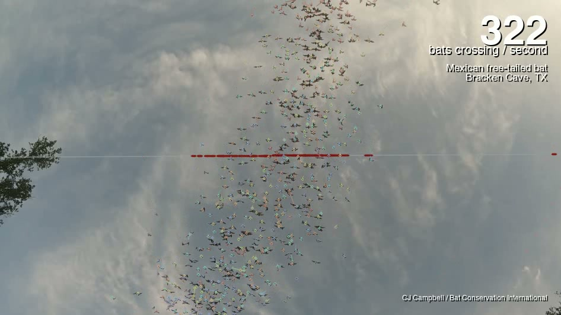
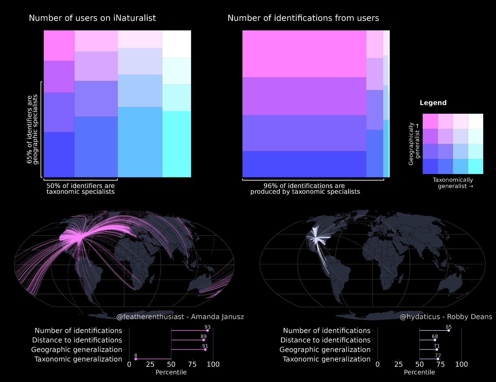
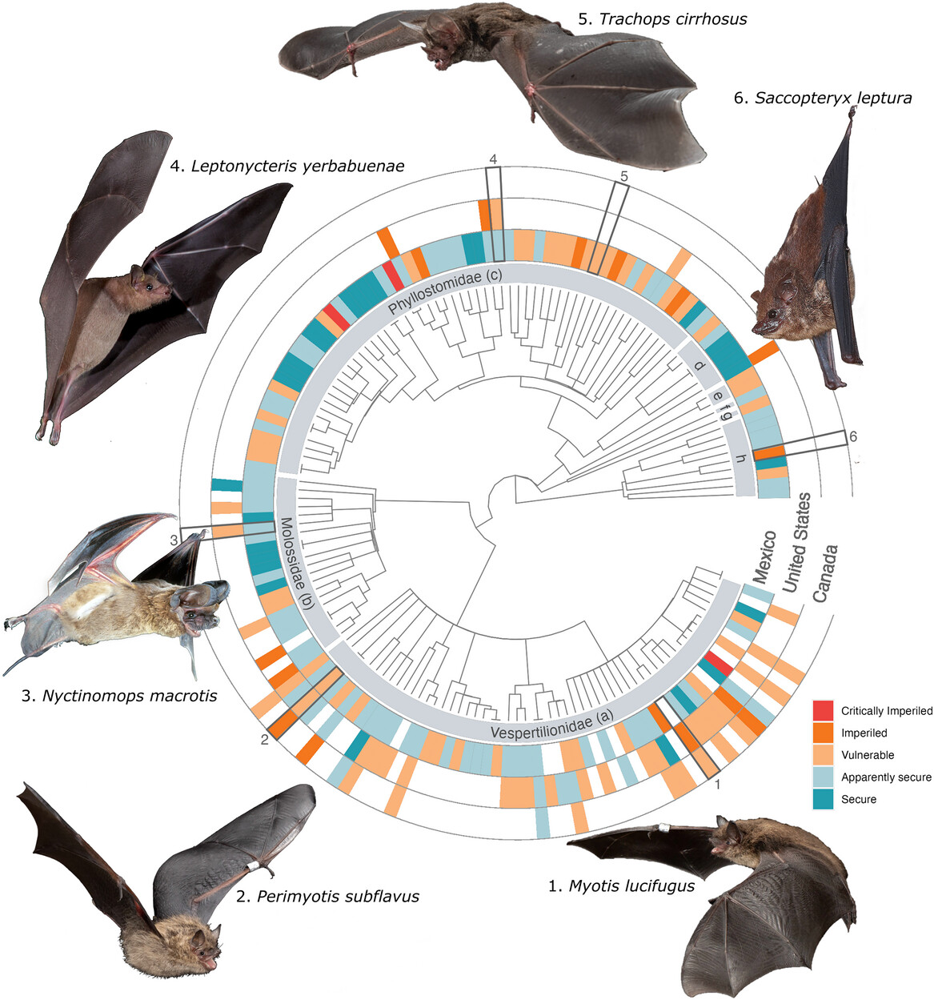

Research
I am a conservation ecologist who develops the methods, tools, and approaches needed to tackle pressing conservation challenges, especially in the systems and species that would otherwise go understudied.

Remote Biodiversity Monitoring
Acoustic, computer-vision, and radar methods that track wildlife at scales traditional fieldwork cannot reach.
View more →
Biodiversity Informatics
Harnessing platforms like iNaturalist and GBIF, and diagnosing bias in global biodiversity data.
View more →
Aeroecology and Migration
Revealing the cryptic migrations of birds, bats, and insects, and their risks at wind-energy facilities.
View more →
Science-to-Conservation Linkages
Turning quantitative findings into practical guidance for wildlife management and policy.
View more →
Bat Ecology & Natural History
Filling gaps in the natural history of one of the most diverse, least-studied groups of mammals.
View more →Methodological Approaches
I leverage a broad suite of methodological approaches to tackle pressing conservation challenges, with a particular focus on developing the methods needed to conduct research in under-studied systems and taxa.
Data Science
I develop methods to integrate biodiversity data from many sources and account for the biases in large, uneven datasets.
Learn more →Machine Learning & Quantitative Methods
From computer-vision detection to hierarchical and Bayesian models, I build the analytical tools that turn large, noisy ecological data into inference.
Learn more →Spatial Modeling
Understanding how organisms interact with, and are limited by, their environment is a central question of ecology.
Learn more →Remote Monitoring & Bioacoustics
I deploy passive acoustic monitoring, bioacoustic detection, and weather-surveillance radar to observe wildlife at scales that traditional field methods cannot reach.
Learn more →Stable Isotopes & Endogenous Markers
Analyzing endogenous markers like stable isotopes helps scale studies of animal movement from the individual to the population.
Learn more →Software Development
I develop open-source software to promote accessible, reproducible science.
Learn more →